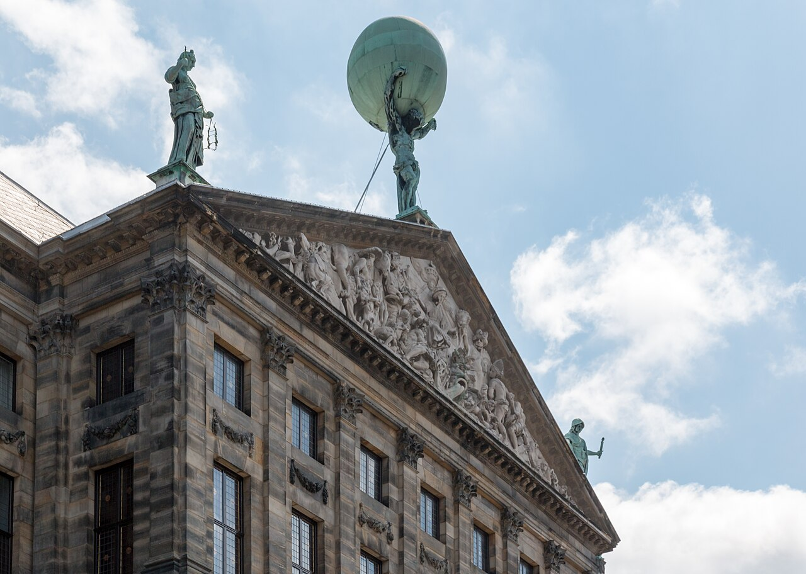
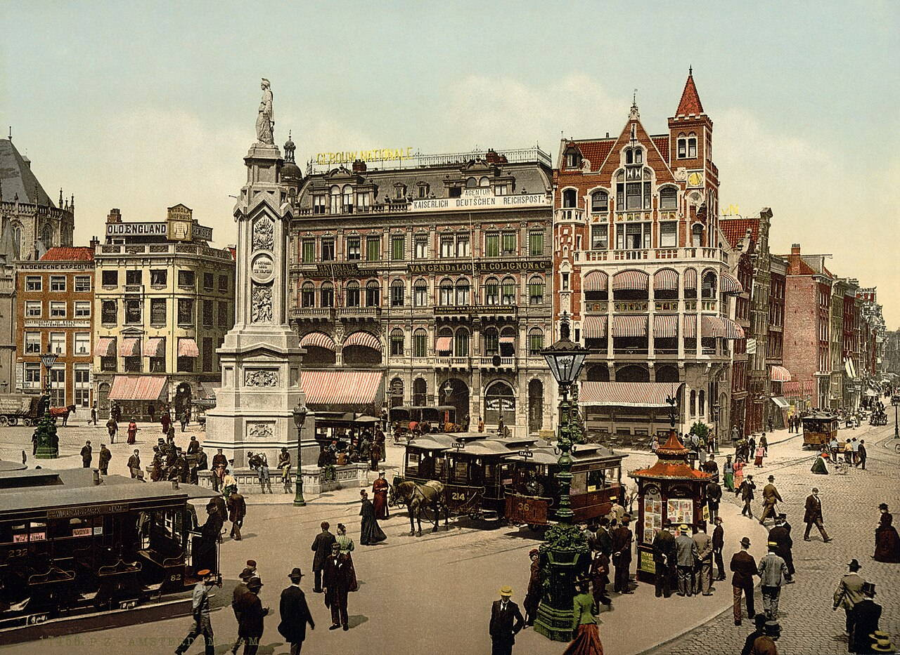
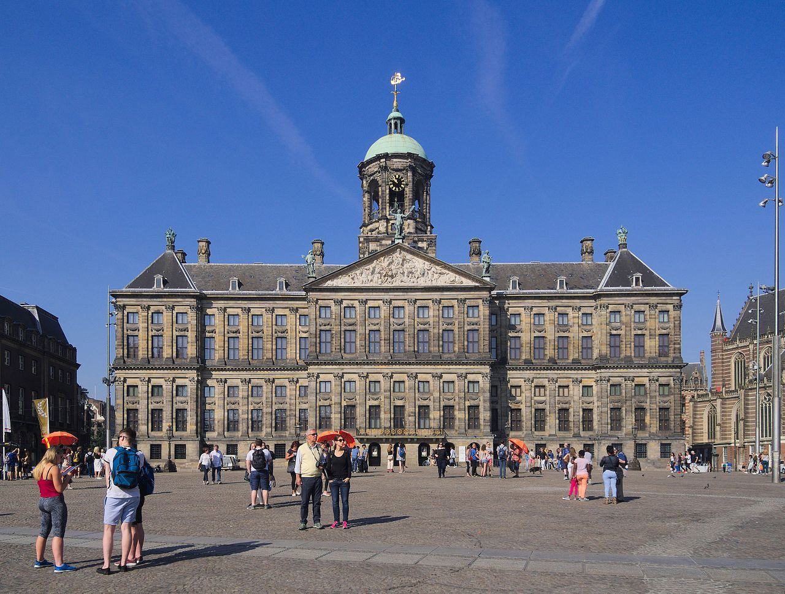
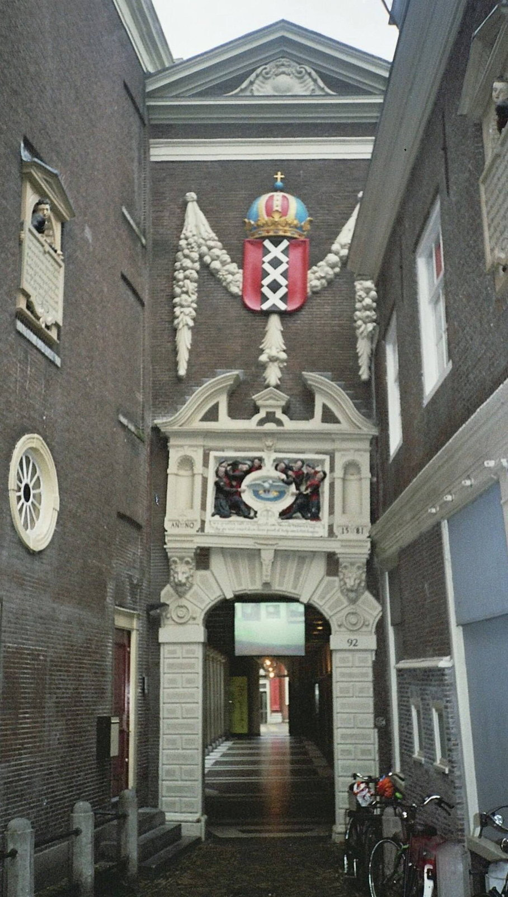
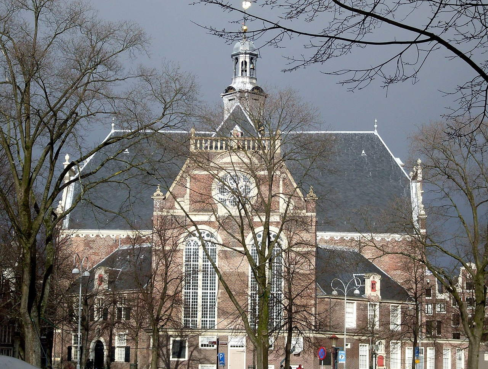

Исторические и справочные гербы


Amsterdam
Путеводитель. Объектов в этом выпуске: 36.
OTIUM — практика нарочитого досуга. В античном смысле otium — не побег от работы, а время, когда внимание возвращается к памяти, пейзажу и мысли — без прикладного дедлайна.
Мы выстраиваем маршруты для неспешного присутствия, а не для чек-листа достопримечательностей: важно быть в месте, а не «потреблять» виды.
OTIUM — не туроператор. Это приглашение пройтись, остановиться и оставить маршрут незавершённым, если свет на фасаде заслуживает ещё минуты.
Исторические и справочные гербы
Путеводитель. Объектов в этом выпуске: 36.
Амстердам — столица Нидерландов и крупнейший город королевства, исторический центр торговли и мореплавания.
С XIII века город развивается на месте дамб у залива; Золотой век XVII века принёс расцвет архитектуры, каналов и светского искусства. Сегодня Амстердам сочетает исторические кварталы с современной урбанистикой и музеями мирового уровня.
В XIX–XX веках порт и колониальная торговля обогатили город; после Второй мировой войны Амстердам выбрал гуманную урбанистику и стал образцом интеграции воды, велосипеда и культурных институций. Сегодня это столица международного права, дизайна и устойчивого развития.

A'DAM Tower — landmark in Amsterdam.
Amsterdam (NL), Koninklijk Paleis -- 2015 -- 7193.jpg

Amsterdam (NL), Koninklijk Paleis -- 2015 -- 7193.jpg — landmark in Amsterdam.

Principal rail terminus on an artificial island at the IJ waterfront. Metro, tram, bus, and ferry connections fan out to the city and North Amsterdam.
Built as Amsterdam's gateway to national rail networks; recent underground lines threaded transit beneath the historic hall.
The default arrival point for many visitors and a busy civic front door.
Amsterdam photochrom2.jpg

Amsterdam photochrom2.jpg — landmark in Amsterdam.
Amsterdam Royal Palace 1699.jpg

Amsterdam Royal Palace 1699.jpg — landmark in Amsterdam.
Amsterdams Historisch Museum.jpg

Amsterdams Historisch Museum.jpg — landmark in Amsterdam.

Museum preserving the annexe where Anne Frank and others hid during the occupation. Narrow staircases and original rooms convey the diary's setting.
Otto Frank's office building included a concealed rear house later opened as a memorial museum.
One of Amsterdam's most visited historic sites on the western canal ring.

Natura Artis Magistra (Latin for "Nature is the teacher of art"), commonly known just as Artis (Dutch pronunciation: [ˈɑrtɪs]), is a zoo and botanical garden in the centre of Amsterdam. It is the oldest zoo in the Netherlands and fifth oldest zoo in the world that is still operating. In addition to the zoo, Artis also contains an aquarium, a planetarium, an arboretum, Micropia, and the Groote Museum ("big museum" in Dutch).

beguinage — religious complex for Beguines.
Bijlmer.JPG

Bijlmer.JPG — landmark in Amsterdam.

Slow itineraries thread the Herengracht, Keizersgracht, and Prinsengracht, linking house museums, cafés, and houseboat moorings.
Merchants built narrow deep plots along new waterways; many interiors were later modernised while façades stayed protected.
The everyday scenery that makes Amsterdam legible on foot or by boat.

Central square linking shopping streets, the royal palace, and the national monument to WWII victims.
The Amstel was dammed here; the square grew into the city's default gathering point.
The symbolic heart of Amsterdam for protests and events.

De Gooyer windmill — landmark in Amsterdam.

Eye Filmmuseum — Dutch archive and museum for cinema.

Foam photography museum — landmark in Amsterdam.

H'ART Museum is an art museum located on the banks of the Amstel river in Amsterdam. Formerly a satellite of the Hermitage Museum of Saint Petersburg, Russia, the museum cut ties with the Hermitage after the Russian invasion of Ukraine in 2022. History The museum is housed in the former Amstelhof, a classical style building from 1681.

Magere Brug — landmark in Amsterdam.

Museum Het Schip — landmark in Amsterdam.

National Maritime Museum — landmark in Amsterdam.

National Monument — landmark in Amsterdam.

Hands-on science museum shaped like a green copper ship's hull rising above harbour bike parking.
Built on a national science outreach brief; the form echoes industrial harbour shapes.
Family-friendly anchor on the eastern harbour front.

Nieuwe Kerk — landmark in Amsterdam.

Noorderkerk — landmark in Amsterdam.
Noorderkerk.jpg

Noorderkerk.jpg — landmark in Amsterdam.

Amsterdam's oldest parish church in the Red Light District courtyard, with stained glass and historic grave slabs.
Founded as a Catholic church; became Calvinist after the Reformation.
Medieval core of the city amid later canal expansion.

Portuguese Synagogue — landmark in Amsterdam.

Classic view along the Reguliersgracht where multiple bridges align, framing gabled façades reflected in still water at dawn.
Planned during Amsterdam's Golden Age ring of canals, the street pattern still defines walking routes between neighbourhoods.
The postcard image of Amsterdam's urban water fabric.

Rembrandt House Museum — landmark in Amsterdam.
National museum of art and history

Dutch national museum spanning Golden Age painting, Delftware, ship models, and Asian collections. The Gallery of Honour culminates at Rembrandt's Night Watch.
Founded in The Hague; the Amsterdam palace of art opened in the late 19th century and was thoroughly modernised in the 2000s.
The anchor of Museumplein alongside the Van Gogh Museum and Stedelijk.

Royal Concertgebouw — landmark in Amsterdam.

Former city hall turned royal palace on Dam Square, with marble Citizens' Hall and sculpture programme.
Built as Europe's largest secular building of its age; Louis Bonaparte's residence began its royal phase.
Dam Square's architectural anchor and state room showcase.

Singel flower market — landmark in Amsterdam.

Municipal museum of modern and contemporary art and design, neighbouring the Van Gogh and Rijksmuseum on Museumplein.
Opened as a civic art museum; major expansion added underground galleries and a striking façade above ground.
Amsterdam's primary venue for 20th- and 21st-century art.

Dedicated museum for Vincent van Gogh and his contemporaries, holding the largest collection of his paintings and drawings.
Founded from family holdings; expansions added exhibition space for temporary shows and visitor services.
Essential for understanding Van Gogh's chronology and materials up close.

Protestant church beside the Prinsengracht whose tower offers views and bells familiar from city soundscapes.
Part of the Calvinist church provision after the Alteration; the spire became a navigation landmark.
Canal-belt church tower visible from many boat routes.

The Zuiderkerk (Dutch pronunciation: [ˈzœydərˌkɛr(ə)k], "southern church") is a 17th-century Reformed Protestant church in the Nieuwmarkt area of Amsterdam, the capital of the Netherlands. The church played an important part in the life of Rembrandt and was the subject of a painting by Claude Monet. The church is open to the public and currently serves as a municipal information center with exhibitions on housing and the environment.